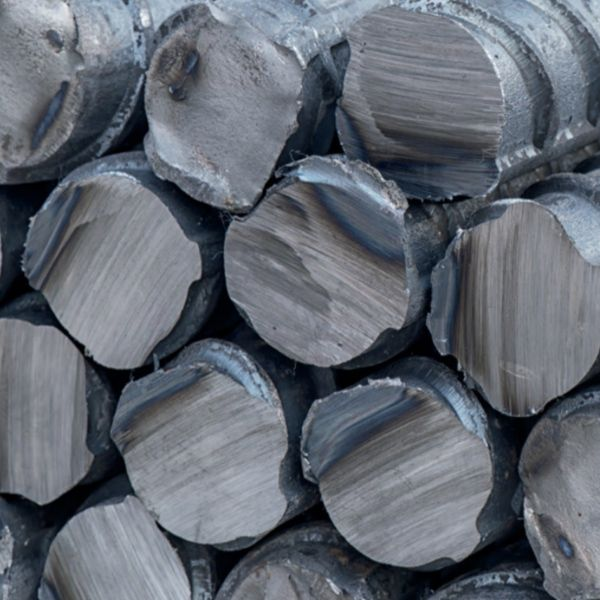
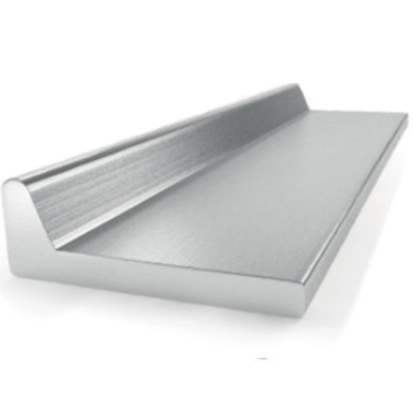
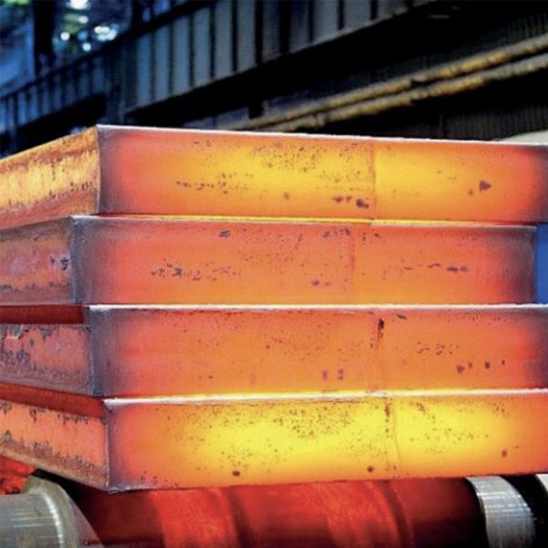
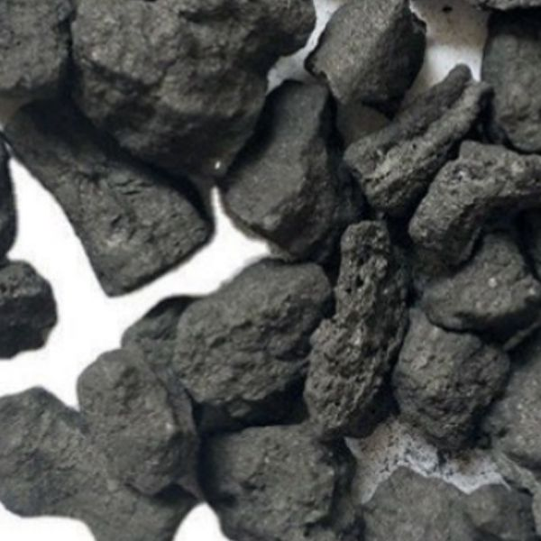
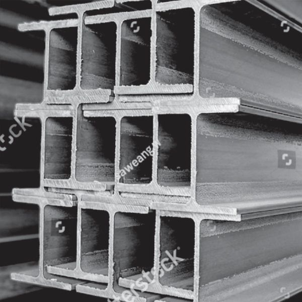
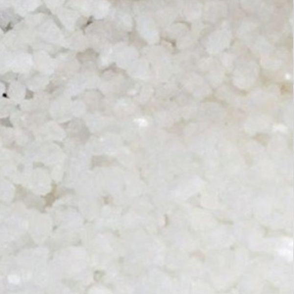

Uzun ürünler

İnşaat ve altyapı
Betonarme, taşıyıcı sistemler ve altyapı işleri için inşaat demiri, filmaşin, köşebent ve U profil. Uzun ürünlerimizin en yüksek hacimli gittiği alan.

Aynı 25 kalem çok farklı tesislere gidiyor. Aşağıda tonajımızın genellikle nereye ulaştığı ve her sektörün yelpazenin hangi bölümünden yararlandığı yer alıyor.
Sektörler

Betonarme, taşıyıcı sistemler ve altyapı işleri için inşaat demiri, filmaşin, köşebent ve U profil. Uzun ürünlerimizin en yüksek hacimli gittiği alan.

Tekne gövdeleri ve üst yapılar için sıcak haddelenmiş asimetrik armuz profiller, sac ve yapısal profiller; tersanenin çalıştığı standarda göre tedarik edilir.

Kendi ürününü hadde eden veya döken ve şarj malzemesini dışarıdan alan tesisler için slab, kare kütük ve pik demir.

Kok tesisleri ve devamındaki kimyasal işlemler için kok ürünleri, kömür katranı ve ham benzol.

Şasi, imalat ve ağır ekipman için I/H profil, çubuk ve şekillendirilmiş profiller; teknik resmin gerektirdiği çelik kalitelerinde.

Azot ve kükürt gübresi olarak amonyum sülfat; dökme veya alıcının ambalaj şartnamesine göre çuvallı sevk edilir.

Madencilik ve taş ocakçılığı
Demir cevheri tozu, flaks kireçtaşı, çelikhane mıcırı ve sönmemiş kireç — henüz çelik olmadan önce yüksek fırını ve konverteri besleyen şarj malzemeleri.
Pratikte nasıl işliyor
Köprü tabliyesi için verilen inşaat demiri siparişi ile depo döşemesi için verilen sipariş aynı şey değildir. Kalite, çap dağılımı, boy, muayene görevlisinin kontrol edeceği tolerans ve şantiyede dayanacak ambalaj — hepsi işe göre değişir.
Malzemenin nereye gideceğini ne kadar anlatırsanız, ilk teklif o kadar isabetli olur. Bir teknik resme veya standarda göre çalışıyorsanız gönderin — genel bir tarife göre değil, ona göre fiyatlandıralım.
| Sektör | Tipik kalemler |
|---|---|
| İnşaat | İnşaat demiri, filmaşin, köşebent, U profil |
| Gemi inşa | Armuz profil, sıcak haddelenmiş sac, I/H profil |
| Metalurji | Slab, kütük, pik demir, ferroalaşımlar |
| Kok kimyası | Kok ürünleri, kömür katranı, benzol |
| Makine imalatı | Çubuk, I/H profil, U profil |
| Tarım | Amonyum sülfat |
Kullanım yerini anlatın; uyan kalemler, mevcut kaliteler ve teslim fiyatlarıyla dönüş yapalım.
Bize Ulaşın